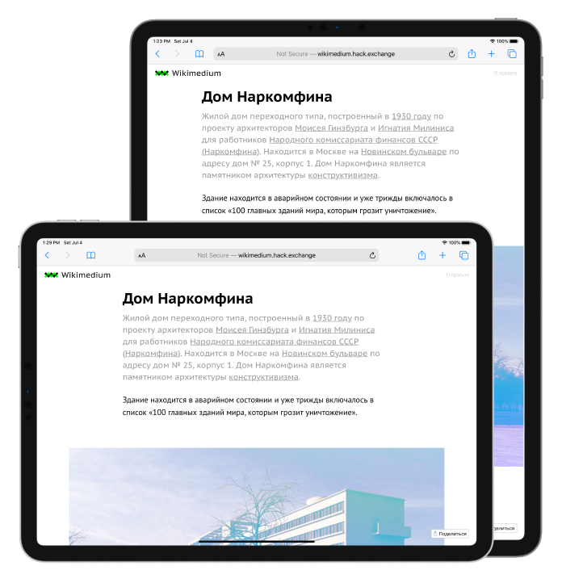

Наглядный пример, чтобы учиться веб-вёрстке
Разработан для изучения основ веб-вёрстки, языка гипертекстовой разметки HTML и каскадных таблиц стилей CSS


С нуля до первого сайта под компьютеры, смартфоны и планшеты
Чтобы начать изучать веб-вёрстку на этом проекте, не требуется каких-то специальных знаний, кроме базого умения пользоваться компьютером
Реальный проект, реальный рабочий процесс
Обучение приближено к работе в реальной жизни, работа разбита на этапы от типографики, создания меню и использования эффектов, до адаптации под мобильные устройства и использования JavaScript скриптов